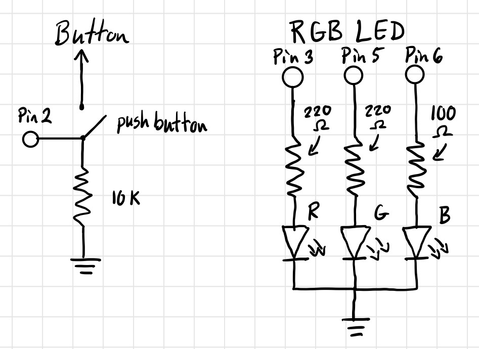
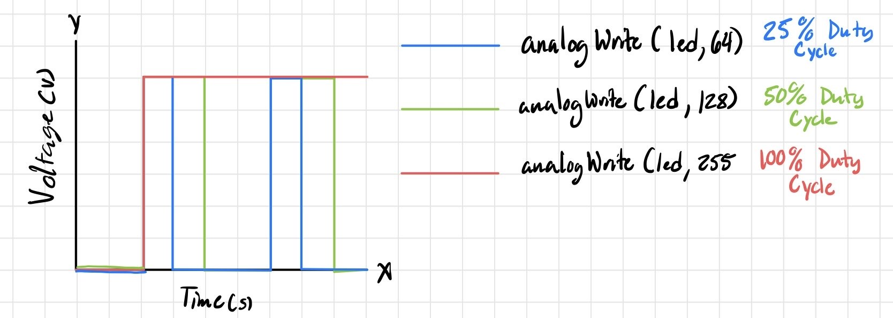

Assignment 2: Fade!
Overview
Creating a circuit using a button and a RBG LED to fade in and out between colors using an
Arduino and a breadboard. The firmware is written in .ino through the Arduino IDE.
Extra: made it toggleable, in terms that clicking the button a consecutive amount of times
changes the LED mode, (0 = Off, 1 = Fade, 2 = Random, 3 = Fade(For loop Version), 4+ = Off).
Schematics and Breadboard Circuitry


The schematic shown above displays both the button and RGB LED used to create this circuitry,
which is then powered and prompted by the Arduino and connected to the breadboard. The GPIO
pins that the RGB LED is connected to are (Red = Pin 3, Green = Pin 5, Blue = 6) with their
respective wire color also being shown. The button is connected to GPIO pin 2 (Yellow wire),
while also being connected to the 5V pin on the Arduino.
Information and Calculations for RGB LEDs:
Based on what we know: Red and Green LED = 1.8V drop, Blue LED = 3.3V drop and the typical safe
level we want to run current through an LED is 20mA. Using Ohm's Law (V=IR) we can determine the
current for both these voltage drops as follows from the order stated.
I = (5V - 1.8V) / 220Ω = 14.5mA (Red and Green LED)
I = (5V - 3.3V) / 100Ω = 17mA (Blue LED)
I chose these resistors values as they are the brightest I can get them without potentially
damaging the LED from too much current provided and close enough to the 20mA recommended we
want to run these LEDs for.
Information for Push Button:
The resistor value used is 10k, as it reduces the amount of power used and is resistant to
electrical noise pickup. From what can be found online, it is typically the generic or
most common resistor when used with a push button.
Arduino Code Snippet (.ino)
const int buttonPin = 2; // Pin in which the button is connected
const int redLedPin = 3; // Pin for the red LED in the RGB LED
const int greenLedPin = 5; // Pin for the green LED in the RGB LED
const int blueLedPin = 6; // Pin for the blue LED in the RGB LED
const unsigned long inputTimer = 400; // Time window given after initial button push
unsigned long lastPressTime = 0; // Time from the last button press
unsigned long lastLedAnimation = 0; // Time from the last LED instance to appear
bool buttonHeldDown = false; // Determines if button is held down
int buttonPressCount = 0; // Counter for number of times button has been pressed
int redValue = 0; // Stores the value of the red LED
int greenValue = 0; // Stores the value of the green LED
int blueValue = 0; // Stores the value of the blue LED
int ledMode = 0; // The mode in which will be executed upon the number of button presses done
int cycleProgress = 0; // Tracks the progress of the Fade sequence
void setup() {
// Put your setup code here, to run once:
Serial.begin(9600); // Monitor input and output of the sketch and prints it
// Sets the digital pins to their respective number associated with the LED or button
pinMode(redLedPin, OUTPUT);
pinMode(greenLedPin, OUTPUT);
pinMode(blueLedPin, OUTPUT);
pinMode(buttonPin, INPUT);
}
void loop() {
// put your main code here, to run repeatedly:
int reading = digitalRead(buttonPin); // Reads the button state
// Checks to see if button has been pressed
if (reading == HIGH) {
// Checks to see if the buttonHeldDown state is false to register the button press
if (buttonHeldDown == false) {
delay(50); // Small delay to debounce the button, to prevent double-pressing
buttonPressCount++; // Increments the counter for button presses
lastPressTime = millis(); // Records the current time
Serial.print("Press detected. Count: "); // Debugging message to check if button has been pressed properly
Serial.println(buttonPressCount);
buttonHeldDown = true; // Sets buttonHeldDown state to true to not increment count when the button is still being held
}
} else {
buttonHeldDown = false; // Resets to false when button is not being pressed
}
// Checks to see if any more presses have been done after the initial button push and given time frame
if ((buttonPressCount > 0) && (millis() - lastPressTime > inputTimer)) {
Serial.print("Time to input choice has concluded. Final count is: "); // Debugging to determine the final count
Serial.println(buttonPressCount);
// Determines which mode to activate based on the total button presses made
if (buttonPressCount == 1) {
ledMode = 1;
} else if (buttonPressCount == 2) {
ledMode = 2;
} else if (buttonPressCount == 3) {
ledMode = 3;
} else {
ledMode = 0;
}
// Resets all values when button is pressed to change state as it helps for led mode 1 to start at the off output
// and not randomly stay at the previous increment state and color values when switched to that mode
buttonPressCount = 0;
cycleProgress = 0;
redValue = 0;
greenValue = 0;
blueValue = 0;
}
// Had to modify both led modes (1 and 2) to remove the delay() as that interrupted the ability to press the button
// to be able to change it to another mode or turn it off. Led mode 3 is the basic fade with a for loop but unable
// to register button presses while its running its mode
if (ledMode == 1) {
// Fade sequencing between red, green and blue in that order
// Checks if 20 milliseconds have passed to run this if loop from the last led animation
if (millis() - lastLedAnimation > 20) {
lastLedAnimation = millis(); // Stores the last led animation done
// Increases the value of that color to brighten it up
if (cycleProgress < 255) {
redValue++;
}
// Reduces the previous color to dim it down, while brighten up the next in sequence
else if (cycleProgress < 510) {
redValue--; greenValue++;
}
// Same as previous lines of code
else if (cycleProgress < 765) {
greenValue--;
blueValue++;
}
// dims until it goes off and restarts the cycle
else {
blueValue--;
}
cycleProgress = (cycleProgress + 1) % 1020; // Increments by 1 every loop until it reaches 1020, then goes back to 0 to start over the fade sequence cycle
// Outputs the value for each color based where it is in the cycle progress
analogWrite(redLedPin, redValue);
analogWrite(greenLedPin, greenValue);
analogWrite(blueLedPin, blueValue);
}
} else if (ledMode == 2) {
// Outputs a random RGB color every half a second
// Checks to see if half a second has passed to run this if loop from the last led animation
if (millis() - lastLedAnimation > 500) {
lastLedAnimation = millis(); // Stores the last led animation done
// Grabs a random value for each color to output
redValue = random(0, 256);
greenValue = random(0, 256);
blueValue = random(0, 256);
analogWrite(redLedPin, redValue);
analogWrite(greenLedPin, greenValue);
analogWrite(blueLedPin, blueValue);
// Reads the values to check if RGB LED is displaying them right
// Serial.println(greenValue);
// Serial.println(redValue);
// Serial.println(blueValue);
}
} else if (ledMode == 3) {
// Fades through each color in sequence (red, green, blue)
// For loop version of the fade sequence with delays, button inputs can not be registered during this mode
for (int i = 0; i < 256; i++) {
analogWrite(redLedPin, i);
delay(15); // delay by 15 milliseconds
}
for (int i = 0; i < 256; i++) {
analogWrite(greenLedPin, i);
delay(15);
}
for (int i = 0; i < 256; i++) {
analogWrite(blueLedPin, i);
delay(15);
}
ledMode = 0; // Turns off to be able to use the button after fading ends due to delays() causing an issue with button inputs
} else {
digitalWrite(redLedPin, LOW);
digitalWrite(greenLedPin, LOW);
digitalWrite(blueLedPin, LOW);
}
}
Circuit's Operation
Gif showing the fading sequence (ledMode = 1) on the left and random sequence (ledMode = 2) on the right.
The last one (ledMode = 3) which is not included mainly because how similar it is to the fading sequence already shown,
since it is simply a for loop version with slight differences in the fading sequence.
Questions and Answers
1: Draw a chart where the X axis is time and the Y axis is voltage. Draw 3 lines representing
the voltage across an LED with analogWrite(led, 64), analogWrite(led, 128), and analogWrite(led, 255).

The graph shows the voltage of the LED over time with their respective color and analogWrite value
assigned, which determines the duty cycle each LED goes through.
2: Given your schematic, circuit, and firmware, assuming the only thing that draws current is your LEDs,
how long would your circuit run if powered by a 1200 mAh battery?
Well if all 3 RGB LEDs are on, that would be (14.5mA + 14.5mA + 17mA) = 46mA total. Given that the battery
is 1200mAh we can divide the mA to find how many hours of battery life. (1200mAh / 46mA) = 26.086hrs, approximately
26.1 hours of battery life.
3: Measure and record the actual voltage across one of your LEDs when it's on. How does this compare to the
theoretical forward voltage for your LED color?
Measuring the blue LED from the RGB LED gave me a reading of 2.77V, taking into account of the
theoretical forward voltage being 3.3V, it is more on the lower side of the expected voltage. To me it just
means that the real blue LEDs forward voltages will vary due to the manufacturing process, and given that
the theoretical forward voltage is likely the average for all blue LEDs it makes sense why it differs a decent amount.
4: Did you use AI tools in completing this assignment? If yes, please provide details on how/when, as well as a
brief reflection. If no, you can either leave this question blank, or provide other information if you'd like.
Initially, I did not use it in the beginning of this assignment and was able to understand and get a circuit schematic
to work with the code I applied to it. However, I wanted to add a twist, that being adding a way to cycle through modes
through consecutive button clicks. When going about integrating this to my code, I ran through an annoying problem that even
looking through forums about similar things did not help me solve it. Thats when I resorted to AI to assist me to solve the problem I was having.
Once I had isolated the problem, dissecting and finding a solution became much more feasible for me. I ended up learning,
that delay() actually stops the button input from even working the way I wanted it to work. With that figured out, I was able to fix the problem
that would have taken longer and or be more difficult to find given how niche the problem I had seemed to be. But it is nice
to have AI as an additional helper when I know what exactly I want to fix and no other solution can be found elsewhere.